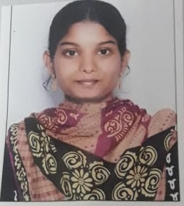

Resume

Summary:
I have 5 years of experinece in Oracle CX Cloud in Tata Consultancy Services and Continous learner.
Education:
Master of Computer application - JNTU Kakinada (2016 - 2019)
Work Experience:
Oracle Service Cloud Developer
- Worked on Configuration settings, Workspaces, Profiles, Analytics, Campaigns, SSO
- Worked in developing Customer Portal Pages, BUI Extensions, Element Manager
- Worked in Portal Migration, .net Console upgrade project, CPM, REST API
Wabtec (Oracle Service Cloud)
- Worked on importing and exporting data from one site to another site
- Worked on test cases related to widgets, incident management and Opportunity management
Skills
- PHP,.net, REST Web services, Web Technologies
- ServiceNow, Tiwilo Work scheduler, SQL, MSSQL, Oracle DB
Awards and Certifications
- Special Apprecitaion Award
- Documentation Championship Award
Other